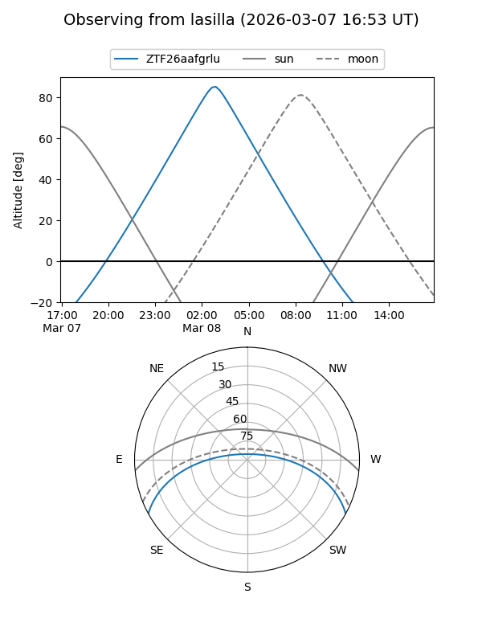
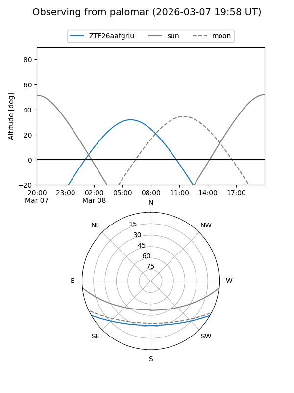

ZTF26aafgrlu
Target ZTF26aafgrlu at 2026-03-08 07:49
Aliases and brokers:
FINK: link
Lasair: link
ALeRCE: link
alt names
ZTF26aafgrlu (ztf,fink_ztf)
Coordinates:
equatorial (ra, dec) = 136.8816,-24.61267
equatorial (HMS+DMS) = 09:07:31.59,-24:36:45.60
galactic (l, b) = (251.5824,+15.23677)
Flags:
Photometry:
last ztfg=18.82
1 ztfg detections
Lightcurve
Visibility


Additional plots